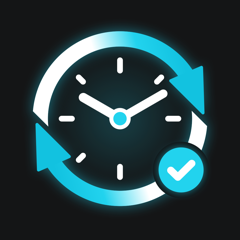

Shift Clock
A personal time clock for shift workers, made for 3rd shift. Hours are kept in tenths, night shifts count toward the right day, and the number you see is the number you enter at work.
Get help
Something not working, or an idea for the app? Email us and put "Shift Clock" in the subject.
support@thechoresapp.netCommon questions
Where is my data kept?
On your iPhone, and in your own private iCloud if you're signed in, so it carries over to a new phone. There's no account and nobody else can see it. See the privacy policy.
How are hours rounded?
Worked time is the time between your punches minus the unpaid lunch, rounded to the nearest .1 (6 minutes). You can switch to always rounding up or down in Settings › Time.
What's the red number on the calendar?
Missed time: how late you clocked in plus how early you clocked out, compared with the shift set in Settings. It's the leave you'd need to put in. Tap the day twice to see how it was figured.
How does the overtime tracker count?
It adds up overtime hours for the current quarter (quarters start January 1, April 1, July 1 and October 1) and notifies you once when you reach your cap, 128 hours unless you change it in Settings.
I clocked in by mistake.
Tap Undo right after, or tap the "Clocked in" button and choose Delete clock-in. Any day can be changed later from the calendar with Edit.
How do I move to a new phone?
Sign in to the same iCloud account and your shifts come with you. You can also use Settings › Back up, then Restore from backup on the new phone.
How do I delete my data?
Delete the app. To remove the iCloud copy as well, go to iPhone Settings › your name › iCloud › Manage Storage, choose Shift Clock, and delete its data.
Shift Clock is a personal tracker. It isn't connected to your employer's timekeeping or payroll, so always check its numbers against your pay stub.